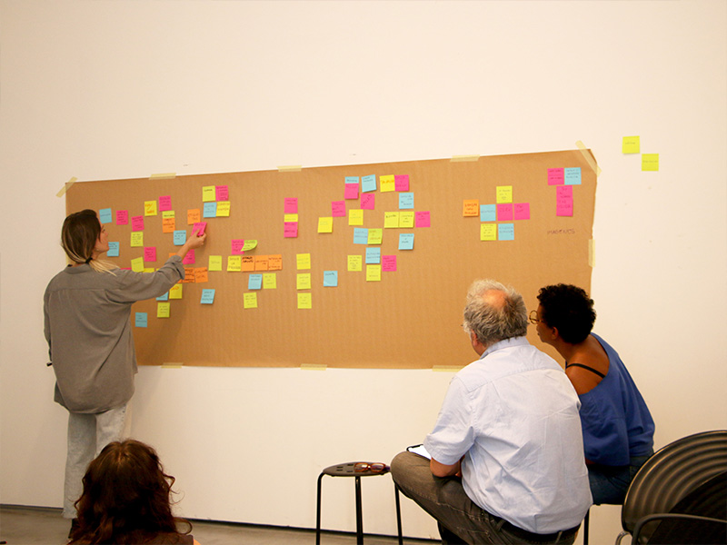
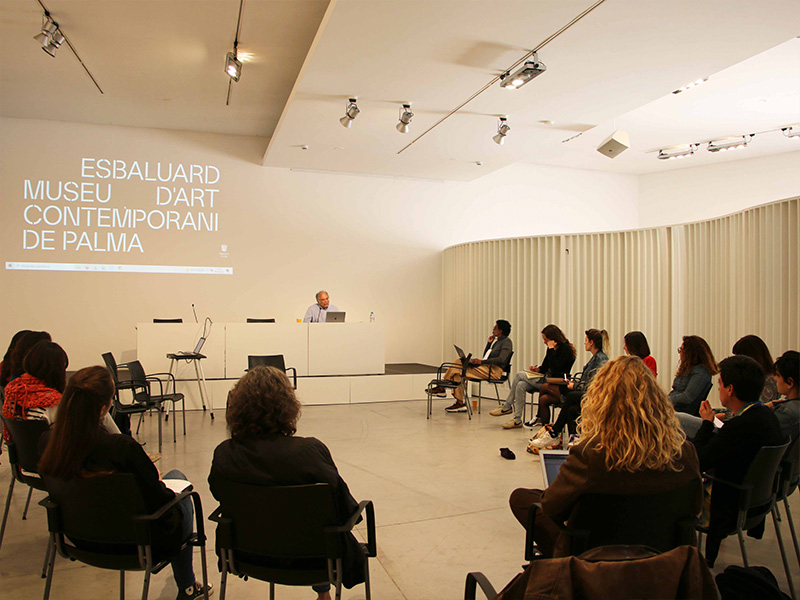
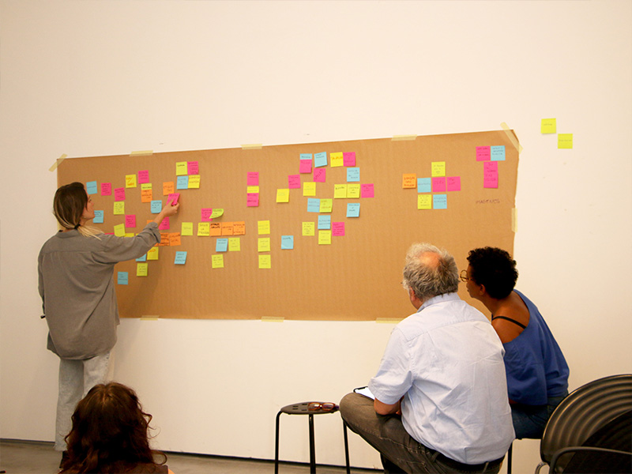
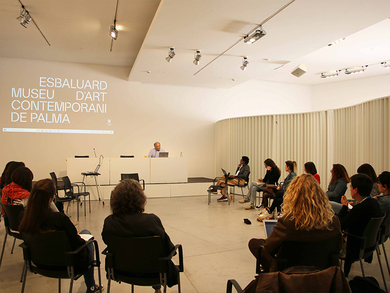

Este es un podcast de Imaginar nuevas Europas. Una iniciativa que da cuenta de la colaboración entre diversas comunidades e instituciones para generar otras formas de vida en común en el contexto cultural español.
Tramando juntas la Europa del futuro.
Laboratori d’art i pensament. LAP.
Es Baluard Museu.
Palma.
Hola, soy Imma Prieto, he sido directora de Es Baluard desde 2019 hasta agosto de 2023 y, desde el principio, tenía muy claro que era imprescindible pensar una estructura como LAP, el Laboratorio de arte y pensamiento, que después bautizamos como Zona de contacto. Queríamos crear un programa, como digo, de formación, investigación, que quisiese constituirse como una plataforma de ideas, un espacio de pensamiento crítico, de pensamiento común, un lugar donde explorar las potencialidades de la práctica artística y la producción cultural entendidos como dispositivos de intervención en el cambio social que tanto necesitamos. Inicialmente, LAP estaba ya en las bases de mi proyecto de museo, pero, desgraciadamente, llegó la pandemia. A pesar de todo, Zona de contacto no surge, no es un nombre que le hayamos puesto a raíz de la pandemia, como algunas personas nos han preguntado, sino que teníamos muy claro que somos herederos de múltiples crisis no resueltas, no sólo la última sanitaria, que no solo es sanitaria, es social, económica, productiva, afectiva, es decir, quizás es un síntoma de una más de las tantas cuestiones pendientes que llevamos arrastrando.
Zona de contacto, Reparar las crisis, es un nombre bastante significativo, que aquello que pasa fuera de los muros institucionales permee la institución a través del pensamiento colectivo y la práctica artística, creando un espacio de debate entre nosotras y con teóricas e investigadoras del mundo del arte, en el que no solo nos exponemos a ser cuestionadas, sino que, sobre todo, sirva para cuestionar nuestras estructuras externas e internas, desde el contexto situado de las Islas Baleares. Este contexto es el de un archipiélago que ha sido vendido al turismo, apostando por unas islas vacacionales que no solo emanan artificialidad, sino que perpetúan un modelo de vida que se encuentra a años luz de la vida de sus habitantes. Estamos tan focalizadas en temas como los casos de balconing, que al final desatendemos problemáticas que nos señalan a todas, como el impacto ecológico y el modelo patriarcal que perpetúa, la gentrificación de barrios y la imposibilidad del acceso a una vivienda digna, además de la desatención institucional en el ámbito de la cultura, en el que no tenemos espacios en la ciudad en los que se pueda pensar. Tener la oportunidad a través del LAP y en el museo de trabajar todas juntas estos temas y crear desde la práctica artística nuevos imaginarios, como por ejemplo ¿Qué será de la isla en 80 años? Cuando ya hayamos hecho la revolución y solo nos quede un vago recuerdo de lo que estamos pasando ahora, o a nivel global, imaginar un mundo sin fronteras, sin colonizadores y sin un capitalismo que nos recuerde constantemente que somos precarias. Trabajar desde la horizontalidad con un grupo reducido y diverso ha creado un engranaje de perspectivas que han ido encajando y complementándose conforme se iban desarrollando los módulos. Y el hecho de poder debatir con Frances Morris, Yayo Herrero, Rita Segato, Brigitte Vasallo, Marta Malo, Pablo Martínez, entre tantísimos otros me ha permitido poder estar de acuerdo y también en desacuerdo con algunos de mis referentes, desde un lugar cuidado, diferente e íntimo. En definitiva, remarcar que el LAP es una alternativa al sistema productivista del mundo del arte y la importancia del pensar la contemporaneidad todas juntas desde lo colectivo.
Y lo que más interesante me parece del programa es que es un espacio para pensar colectivamente, en compañía, sobre los grandes retos del presente. Y, además, poder hacerlo desde una perspectiva muy horizontal, abierta y autocrítica, incluso, porque hemos reflexionado mucho sobre, por ejemplo, la forma del programa, sobre el rol del museo en la sociedad. Y también es interesante que no estaba solamente enfocado a pensar, sino a actuar, siempre con un espíritu transformador. Hemos podido disfrutar de la compañía de grandes figuras, incluso de referentes internacionales, pero siempre de un modo cercano y horizontal. Es decir, que no vienen simplemente a impartir conocimientos, sino a compartir y a pensar y participar y gracias a eso, han sido unos meses muy estimulantes. Creo que esto es de valorar, precisamente, en un territorio periférico como es Mallorca, que tiene unos retos específicos que hay que pensar de manera situada y diría que aquí ha sido un programa único, porque no existe nada similar. Ha sido una vía de activar el museo, de crear redes a su alrededor, pero también más allá de él, porque también es una manera de exceder el museo. Y que además esta activación sea no puntual, sino continuada en el tiempo, creo que eso es algo clave. Creo que vivimos en un momento de erosión del tejido social y que generar este tipo de espacios es una necesidad.
¿Qué plantea? LAP plantea la necesidad de pensar la complejidad contemporánea, articulando una actividad estructurada en cinco ejes, que se entrelazan obviamente los unos con los otros para construir el sistema nervioso del conjunto de la actividad formativa, que es lo que se está proponiendo. Estos cinco ejes o módulos, como también los hemos llamado, son los siguientes: Nueva institucionalidad, es decir, la necesidad de pensar nuevas formas institucionales. De algún modo también es empezar por nosotros mismos, ser capaces de mirarnos el ombligo y ser autocríticos.
La verdad es que lo que es fascinante del diálogo que se genera aquí es que hay un espacio absolutamente interdisciplinar en donde hay gente que viene de mundos totalmente diversos y que eso provoca, pues precisamente, comprensiones tanto ideológicas como prácticas de qué significa una institución democrática, qué significa pensar realmente, por ejemplo, como la palabra museo ya es una palabra compleja en sí misma y con muchas contradicciones y muy conservadora. Y, realmente, lo que está resultando es un diálogo fascinante que me está literalmente calentando la cabeza de cara a pensar posibilidades de futuro de las propias instituciones en las que nosotros trabajamos.
El Museo del Futuro, el museo que podría ser, es un museo más como espacio de recursos, espacio de reflexión, espacio para el visitante como usuario. Vivimos en una sociedad en la que nos hemos acostumbrado a ser usuarios, a usar todos los recursos que tenemos a nuestro alcance, y yo creo que las instituciones, en ese sentido, pueden integrarse así con todo el conocimiento que tienen, ponerlo al alcance de cada persona para que cada una pueda hacer su propio museo.
It’s already clear that the museum belongs to the people. Nobody doubts it anymore. And it belongs in the relation all the way. It is not about a light concept of the museum which approaches the communities in the way to teach them. So it’s a mutual exchange of different experiences and knowledge, this is the museum today.
Qué es un museo o qué debería ser un museo o cuál será el futuro de nuestros museos y cómo esos museos son nuestros. Han salido muchos cuestionamientos, muchas líneas de reflexión, muchas preguntas y dudas. Pero hay uno de los puntos que quisiera destacar, que es como esta relación entre lo humano no humano y la naturaleza. Cómo la institución museal, tanto en su arquitectura conceptual como física, renueva esos lazos entre humano no humano y naturaleza.
El segundo es Ecologismos. Desde una isla, yo creo que el problema medioambiental obviamente es mundial, global, lo sabemos, pero es especialmente pertinente planteárselo desde una isla en medio del Mediterráneo, una isla entre África, Europa y Oriente Medio.
Ecologismos, porque nos encontramos ante una profundísima crisis ecológica y social. Imaginar, porque necesitamos repensar la vida en común de una forma totalmente distinta y esto implica salir del lugar en el que estamos y tratar desde donde estamos de caminar a otros lugares diferentes. Y lo imposible, como provocación, porque el modelo de pensamiento dominante parece que lo que hay, es decir, esta dinámica de capitalismo heteropatriarcal, es una especie de ley natural, es lo único posible. Y, por tanto, en este marco lo que necesitamos es pensar en esos imposibles.
Volem pensar la transformació social. Em veig imaginar aquests futurs que són futurs possibles, no només en futurs que semblen impossibles, en futurs que, precisament, hauran de ser més enllà del petroli, hauran de ser un futur amb unes condicions per la vida diferents de les que hem tingut ara, precisament, per ser dinàmica de destrucció, però que són futurs que dependran de com nosaltres els organitzem, que siguin d 'una manera o d 'una altra.
Creo que este programa da un pie al museo en lo que es una realidad que atraviesa nuestras vidas. Vivimos un momento de crisis ambiental que no podemos negar y que, un museo como Es Baluard apueste por esto, creo que es no solamente tremendamente acertado, sino también tremendamente valiente. Muchas veces nos cuesta mucho menos imaginar futuros catastróficos, que futuros esperanzadores. Esos futuros esperanzadores pasan porque reconstruyamos una relación armónica con nuestro entorno, con el resto de seres vivos. Así, que lo que estamos haciendo aquí, es huir de esas miradas de apocalipsis total para construir vidas que merezcan la pena ser vividas por los seres humanos y por el resto de seres vivos. Eso sí, entendiendo que nos tenemos que acotar a unos límites ambientales que ahora mismo son impepinables.
La veritat és que jo estic molt contenta de que es generin aquests espais com de trobar llenguatges des de diferents disciplines i inquietuds en qüestions que ens interpel·len a tots, que és el que plantegem un poc tot el programa, i efectivament aquest mòdul en concret, és una qüestió dels ecologismes, de la problemàtica i la crisi climàtica i ambiental que evidentment tots som conscients que patim, d'alguna manera. Per això, és tremendament inspirador i aquest dia ha sortit molt el concepte de col·lapse i davant d'aquest col·lapse tenim dues opcions, deixar-nos col·lapsar i deixar-nos dur per aquesta sensació de les distopies, que ara a més estan molt presents en tots els imaginaris col·lectius, o generar espais on poder-nos donar el dret de pensar utopies possibles sobre els futurs que nosaltres volem viure. I aquí sorgeixen moltíssimes de possibilitats, sobretot quan atenem el concepte de límits amb els que haurem de conviure en les properes dècades i en comptes de veure-ho com una cooptació o com una constricció, ho veig com un suggeriment per a partir d'aquí imaginar aquests impossibles que pretenguin, vulguin o poden sostenir vides dignes en territoris concrets.
Aquest programa és un programa experimental en el qual s'intenten lligar llenguatges, podríem dir més acadèmics, amb llenguatges artístics i creatius, i és tot un repte necessari en el qual podem pensar més enllà del que s'anomena el col·lapse ecològic o de la civilització capitalista a partir de llenguatges creatius per precisament generar aquests futurs possibles.
Yo siempre lo digo, porque para mí es un referente, cuando Úrsula K. Le Guin dice que para imaginar utopías, para vivir en utopías hay que imaginarlas, porque si no las imaginamos no vamos a saber nunca cómo construirlas. Entonces generar esos relatos que nos permitan imaginar futuros mejores creo que nos ayudará a poder construirlos entre todas.
Feminismos en plural, de hecho todos los módulos son plurales, pero bueno, feminismos, la necesidad de estos cambios de paradigma de qué está pasando con el feminismo de la igualdad, de la diferencia, a pesar de que obviamente nos posicionamos a favor de un feminismo de la diferencia inclusivo, en el que todas las formas de ser, es decir, asumiendo la diferencia de género, sexo o orientación sexual, es decir, que vamos más allá. El feminismo es un cambio radical, un cambio que permite poner encima de la mesa la necesidad de crear una nueva estructura que derroque el patriarcado.
A mi, allò que m'interessa en aquests espais no és com la transmissió de coneixement, sinó com posar els sabers i els coneixements que aportem, perquè tenim tota la informació ja inscrita en nosaltres, posar-los en comú i al servei d'un pensament comunitari. En aquest sentit, agrair-vos tota la disponibilitat, tota la generositat, tota la passió del que ha passat aquests dies i la seguretat que jo, com a mínim, em vaig com plena d'energia i plena fins i tot d'esperança, que no és poc.
La verdad es que me ha encantado participar en este programa de formación, porque no cuenta solo con una parte expositiva, sino que realmente es un espacio de pensamiento conjunto. Es muy interesante cómo se van produciendo conversaciones, cómo sientes que se están gestando proyectos, y cómo de alguna manera también puedes no intervenir en los proyectos, pero sí que puedes sugerir o contribuir. Así que encantada, encantada de estar aquí, la verdad, y de haber aportado aunque sea un pelín desde la perspectiva de raza y de género.
Aquest és un espai de saber col·lectiu, no des d'un punt de vista reglat, sinó des d'un punt de vista de creació col·lectiva d'eines crítiques, per poder analitzar la realitat que ens envolta i poder-la transformar des d'un punt de vista feminista, i és d'agrair que Es Baluard hagi creat un espai com aquest, perquè el feminisme és la millor eina per transformar la vida de les persones.
Em sembla molt interessant tota la part que es dona de l'intercanvi amb gent, tant amb persones participants com amb les que han estat convocades com a ponents. M'enduc, sí, hi ha una part com de pensament que dins un museu, fins ara, si dins Es Baluard no hi havia participat mai, i hi ha una part de poder també entrar en contacte amb gent que ens coneixem de Mallorca, i que de cop entrem en aquest espai més teòric, que jo recordava que estava més ubicat dins l’espai universitat o dins l’espai conferència, però de cop està en un punt d'intercanvi tu a tu, o en un punt d'intercanvi a partir dels projectes que fa cadascú, ai, que fa cadascú, a partir dels interessos de cadascú, poder compartir referents o poder compartir, sí, realment, el pensament, el punt de vista, que és super enriquidor.
El cuarto módulo es Trabajos, en el que reflexionamos sobre la precariedad y la productividad en el presente.
Ese listado de cosas que nos define y que nos presentan en un currículum y que, quizá, alguna vez, cambiaremos y enfocaremos de otras maneras, porque es verdad que cuando nos sentamos y decimos quién es esta persona, tendemos a seguirla de las cosas que hace en el trabajo, porque el trabajo, efectivamente, es la gran identidad, una de las grandes identidades, que parece que prevalece frente a las demás.
Diria que hi ha dues dinàmiques que afecten els i les treballadores artístiques i culturals de la mateixa manera que afecten a la societat en general i a les classes populars. Una és la precarització creixent del treball i de la vida, i la segona, la mercantilització de la cultura i de l'art, que la converteixen en un producte que expropia la cultura feta socialment i que destrueix, doncs, aquests ventres social i associats tradicionalment a la cultura. Davant d'aquestes dues dinàmiques, penso que és possible la reapropiació col·lectiva de la cultura a partir de la gestió comunitària de la cultura, a partir del cooperativisme cultural, per recuperar la cultura com una relació social, com un procés col·lectiu, i també com a forma d'autoorganització de les treballadores i treballadors culturals i artístics en format cooperatiu, en format col·lectiu, i recuperar la dimensió col·lectiva i transformadora del fet cultural que reverteixi l'individualisme, la mercantilització i la desarticulació col·lectiva.
Hemos estado trabajando en el Laboratorio, en el LAP, durante estos días, analizando un poco cuáles son las infraestructuras del arte y cómo afectan estas infraestructuras o el uso de estas infraestructuras, cómo afecta la precariedad de quienes nos dedicamos a la práctica artística, artistas y creadores, fundamentalmente. Hemos estado viendo cómo en las últimas décadas, después de generar toda una serie de infraestructuras, museos, espacios de exposición, estas infraestructuras han ido, de alguna forma, fagocitando o extrayendo o acaparando casi todos los fondos dedicados a la creación y a la producción artística.
Jo crec que és importantíssim el que s'ha dit, com a mínim en el mòdul 5, en què jo he participat, el tema de les precarietats laborals, els treballs i la relació que això té amb l'activitat artística. És dir que és un espai que serveix no només per a pensar i aprendre, sinó per desaprendre moltes de les coses que tenim mal apreses.
Y, por último, Fronteras, que obviamente apunta a las migraciones, también especialmente pertinente, sabiéndonos en una isla, en medio del Mediterráneo, con todos los conflictos que conlleva, pero también sin dejar de pensar en una mirada transhistórica, es decir, sabiéndonos o siendo conscientes de que cualquier sociedad, especialmente alrededor de este Mediterráneo, hoy en día existe gracias a múltiples migraciones a lo largo de la historia.
En estos dos días estuvimos intercambiando ideas, experiencias alrededor del tema de la frontera. Y la frontera puede ser algo terrible, puede ser algo muy violento. Pensamos en el Mediterráneo, en lo que pasa en el Mediterráneo cada día. Pero como concepto es también muy fascinante. Es muy fascinante y está en el centro hoy de prácticas de investigación y también de prácticas artísticas. Y la comparación y el intercambio entre estas prácticas ha sido muy exitoso en estos dos días.
En aquest mòdul de LAP 2 sobre fronteres, la veritat és que em après molt entre totes i tots, tant entre el propi grup com entre els diferents ponents que m'han anat passant, que tots i cada un d'ells i d'elles han tingut una experiència de vida distinta, travessada, per la qüestió de les fronteres. Les fronteres vistes des d'una perspectiva política, vistes des d'una perspectiva migratòria, des d'una perspectiva vital que d'alguna forma mostra bé a totes i també hem treballat molt, de la part més de laboratori, el que és aquest potencial d'aquestes fronteres com a metàfora també per mirar de construir uns altres mons possibles i una societat molt diferent de la que tenim ara.
Imaginar nuevas Europas es una iniciativa impulsada por la Presidencia española del Consejo de la Unión Europea.


 


